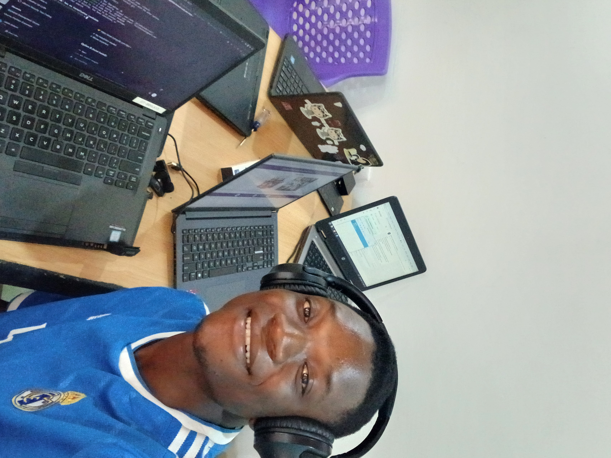

Jallah Koleah | WDD130

Hi! I'm Jallah Koleah from Monrovia, Liberia. I love programming, and it has been one of my passions for years. I also enjoy video games as a way to relax and relieve stress. Basketball is another sport I enjoy playing. I am one of four children and recently returned from my mission in Nigeria. Because I love coding, I am hoping to be an expert in software development. I have the the opportunity of working alongside so many developers who are experienced and continue to learn new things from them and through my own research and practices.